import seaborn as sns
import matplotlib.pyplot as pltVisualisation
Data and information visualization is the practice of designing and creating easy-to-communicate and easy-to-understand graphic or visual representations of a large amount of complex quantitative and qualitative data and information with the help of static, dynamic or interactive visual items.
Wikipedia
The Python visualization landscape has many options to choose from - making it a little daunting at first!

Source: PyViz, Jake VanderPlas
Seaborn 🫱🏻🫲🏻 Matplotlib
Today we will focus on getting comfortable using seaborn, which is a nice wrapper over the basic functionality provided by matplotlib.
Both
matplotlib and seaborn come pre-installed with Anaconda.
To have access to the functionality of both libraries, we first need to import them. It is common to alias these libraries:
We also need a dataset!
import pandas as pd
proteins = pd.read_csv('data/example_proteins.csv')Once imported, seaborn gives us access to many simple plots out of the box.
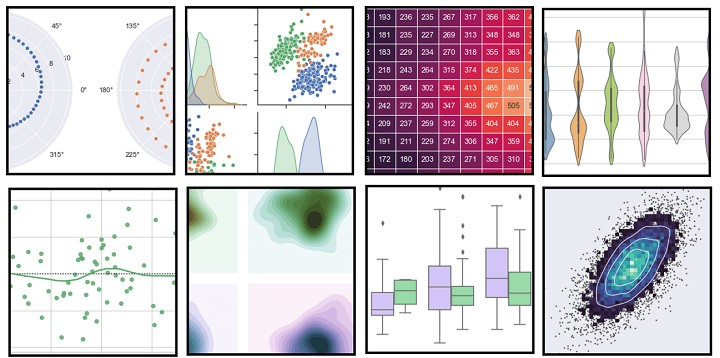
The simple scatterplot
Let’s start with a scatterplot, which is useful for visualising simple x,y datasets.
sns.scatterplot(
data=proteins,
x='Molecular Weight (kDa)',
y='log(2)_expression',
)<Axes: xlabel='Molecular Weight (kDa)', ylabel='log(2)_expression'>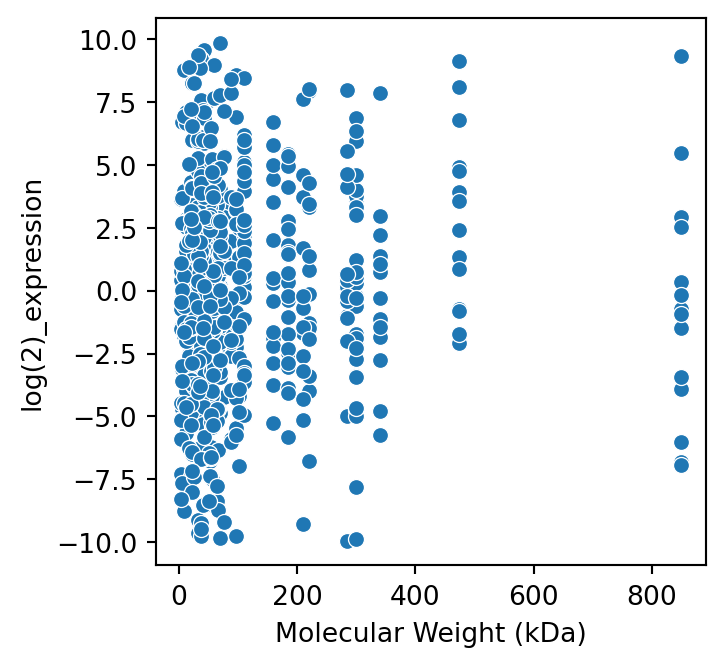
We can add additional classifiers to separate the data by colour (hue) or style.
sns.scatterplot(
data=proteins,
x='Molecular Weight (kDa)',
y='log(2)_expression',
hue='Time point (h)',
style='Donor',
)<Axes: xlabel='Molecular Weight (kDa)', ylabel='log(2)_expression'>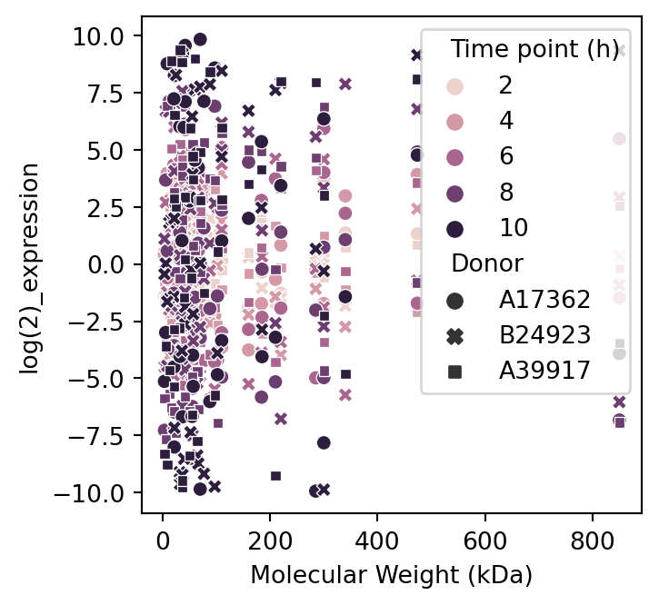
The basic boxplot
Similarly for a boxplot:
sns.boxplot(
data=proteins,
x='Donor',
y='log(2)_expression',
hue='Time point (h)',
)<Axes: xlabel='Donor', ylabel='log(2)_expression'>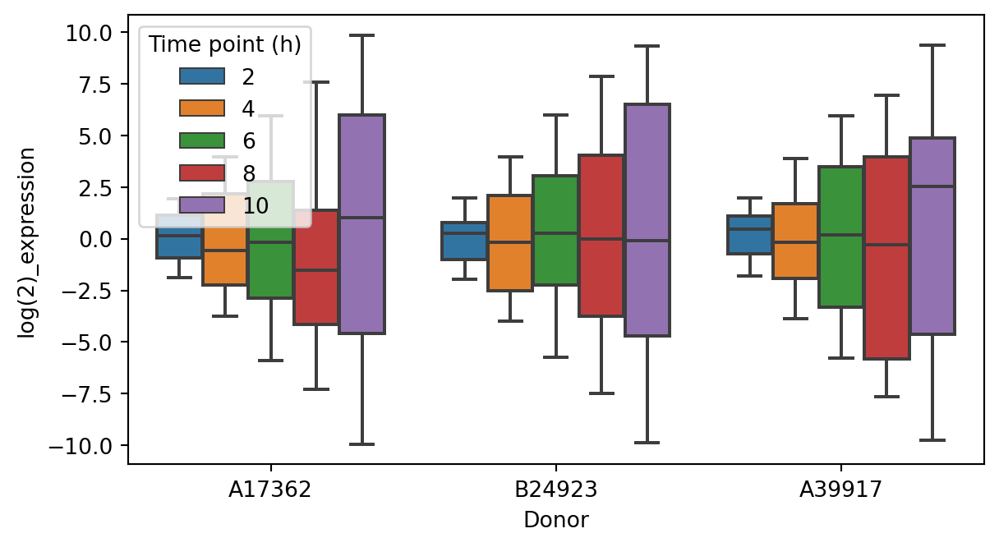
The humble histogram
And for a histogram:
sns.displot(
data=proteins,
x='log(2)_expression',
hue='Time point (h)',
kind='hist'
)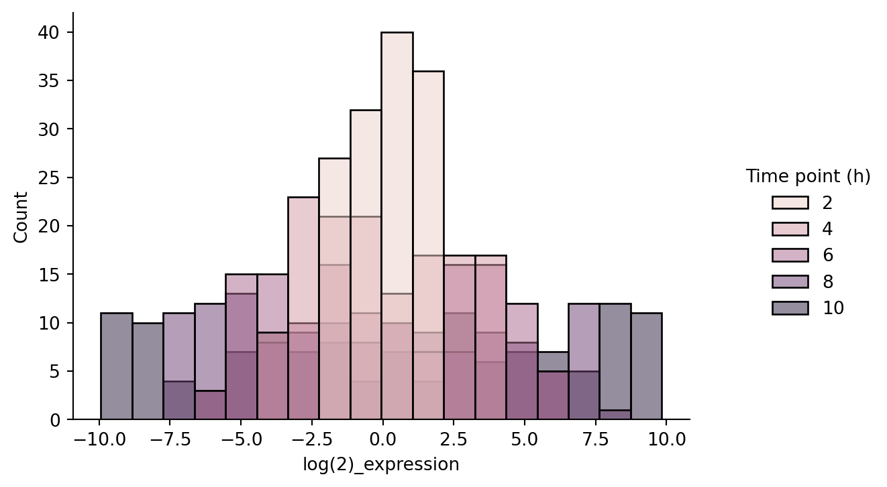
And for a histogram:
sns.displot(
data=proteins,
x='log(2)_expression',
hue='Time point (h)',
kind='kde'
)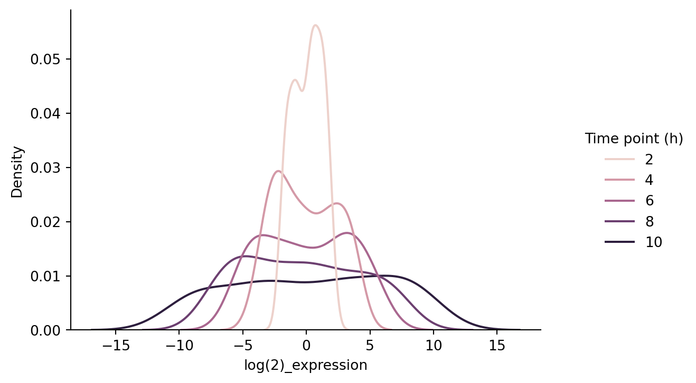
The lazy lineplot
And for a lineplot:
sns.lineplot(
data=proteins,
x='Time point (h)',
y='log(2)_expression',
hue='Donor'
)<Axes: xlabel='Time point (h)', ylabel='log(2)_expression'>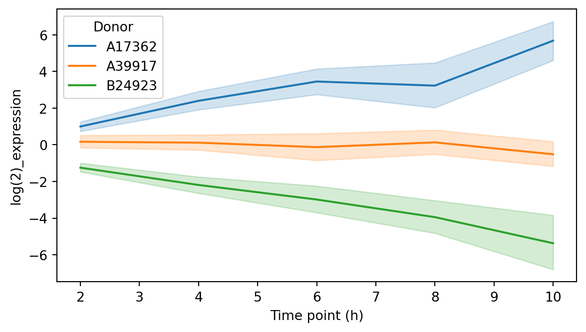
Choosing colours
Why does colour matter?
Colours can help highlight patterns, distinguish categories, making visualisations more engaging and easier to interpret.
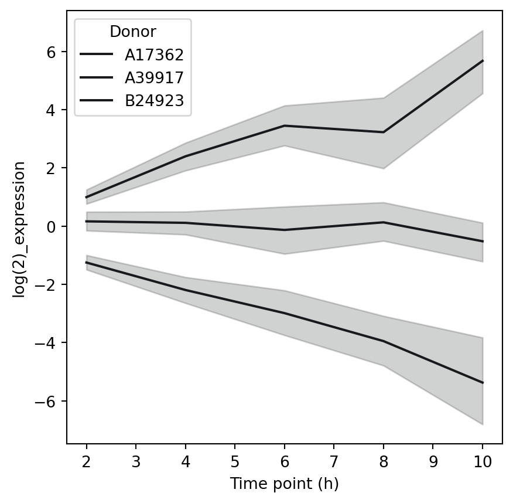
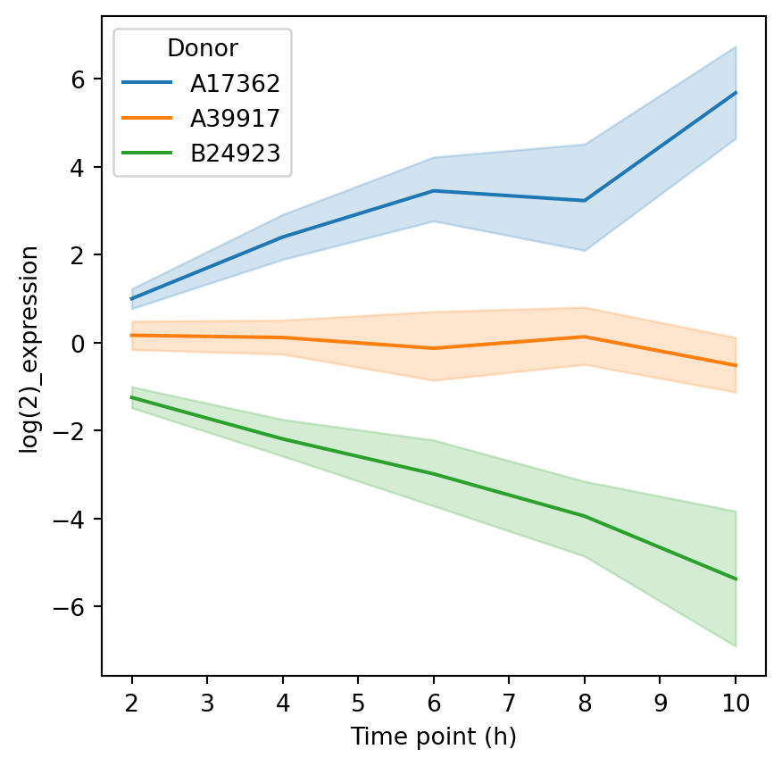
Matplotlib provides a variety of built-in color palettes for different types of data:
- Categorical:
deep,muted,pastel,dark,colorblind - Sequential:
Blues,Reds,Greens,Purples - Diverging:
coolwarm,RdBu,Spectral
Built-in palettes can be accessed using the palette argument:
sns.lineplot(
data=proteins_filtered,
x='Time point (h)',
y='log(2)_expression',
hue='Donor',
palette='tab10'
)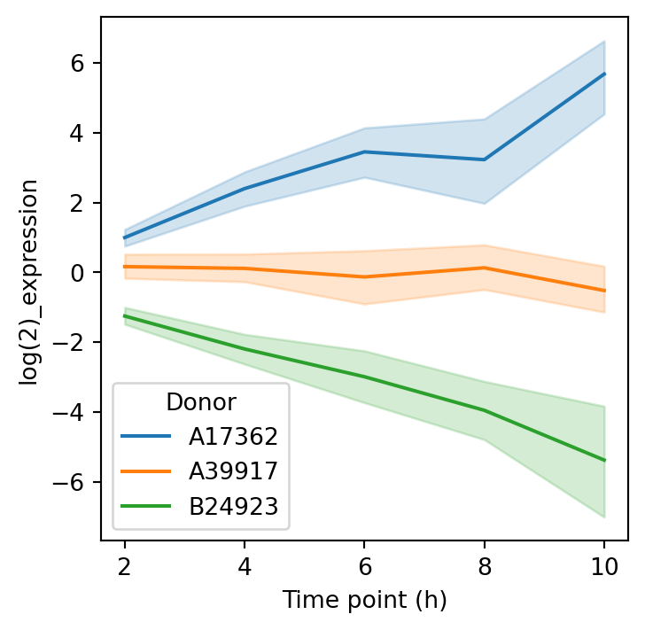
Creating a custom palette
For more control, you can create a custom palette using a dictionary that maps specific categories to colours:
# Define a custom palette
custom_palette = {
'A17362': '#28112B',
'A39917': '#BA324F',
'B24923': '#4BA3C3'
}
# Apply the custom palette
sns.lineplot(
data=proteins_filtered,
x='Time point (h)',
y='log(2)_expression',
hue='Donor',
palette=custom_palette
)<Axes: xlabel='Time point (h)', ylabel='log(2)_expression'>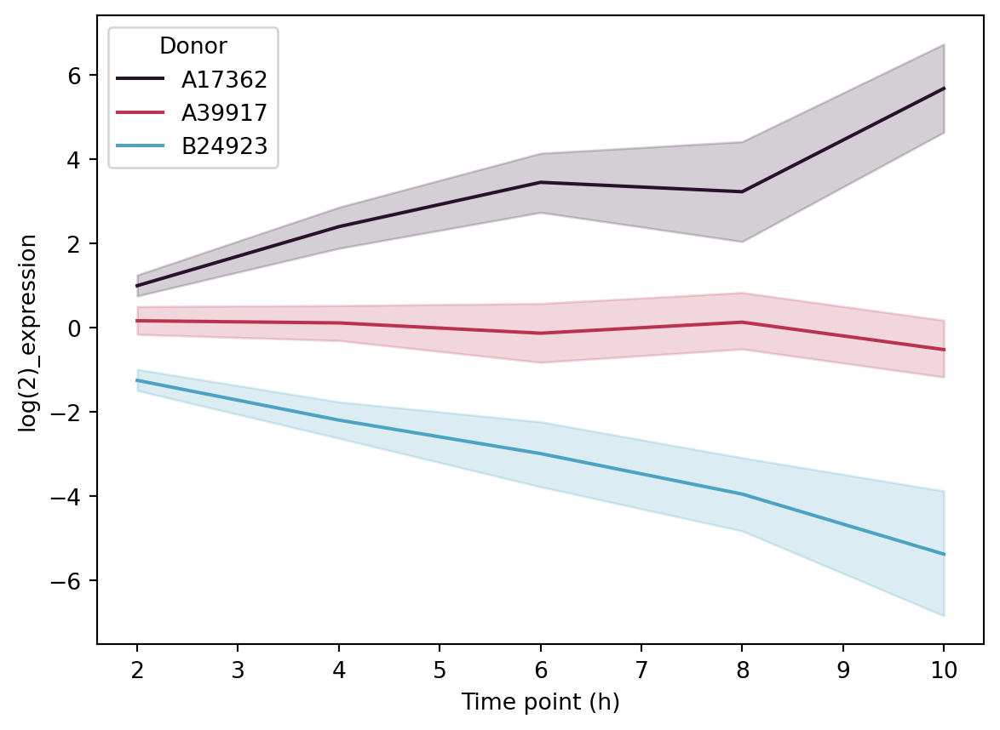
In practice
Exercises
4.1 Creating a simple visualisation
4.2 Customising colour schemes
Makeovers with Matplotlib
So far, we have accepted the standard options that seaborn makes available to us.
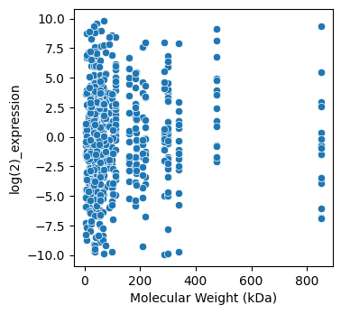
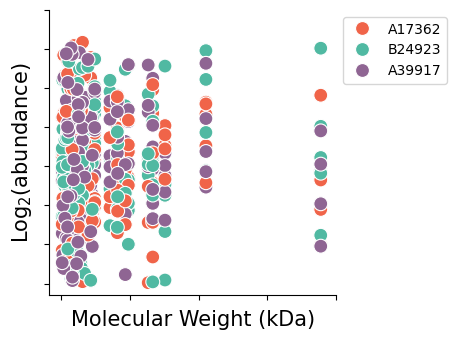
However, ‘under the hood’ the figure is still created using matplotlib objects and often we need to return to matplotlib to style plot elements.
Matplotlib is typically imported and aliased as plt:
import matplotlib.pyplot as pltThe canvas
We first need to understand how matplotlib structures a figure.
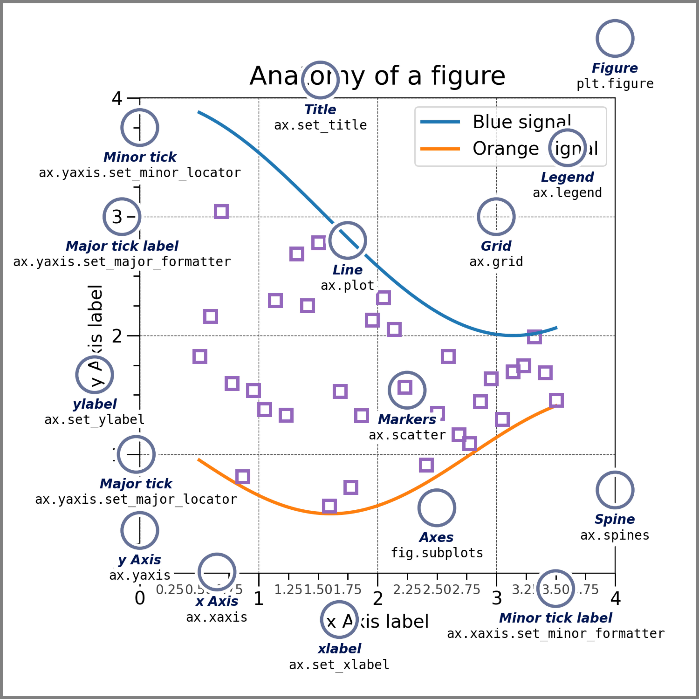
Source: matplotlib
Styling
We can then edit different parts of the visualisation using methods provided by the fig or axes objects.
fig, ax = plt.subplots(figsize=(3, 3))
sns.scatterplot(
data=proteins,
x='Molecular Weight (kDa)',
y='log(2)_expression',
hue='Donor',
palette=custom_palette,
s=100,
)
plt.ylabel('Log$_2$(abundance)')
plt.xlabel('MW (kDa)', fontsize=15)
ax.set_yticks(
labels=[],
ticks=[-10, -5, 0, 5, 10])
plt.legend(bbox_to_anchor=(1.0, 1.0))
ax.spines['right'].set_visible(False)
ax.spines['top'].set_visible(False)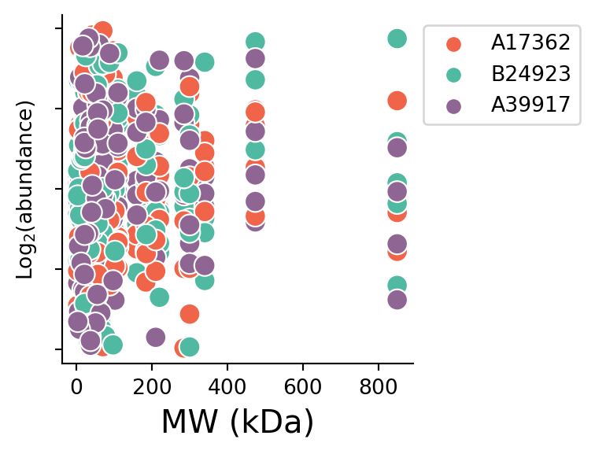
In most styling use cases, the
plt and ax functions are interchangable.
Multiple panels
We can create figure layouts using a variety of methods.
# a figure with a single Axes
fig, ax = plt.subplots()
# a figure with multiple axes
fig, axes = plt.subplots(2, 2)
# Add to your axes by indexing
# axes[0, 1]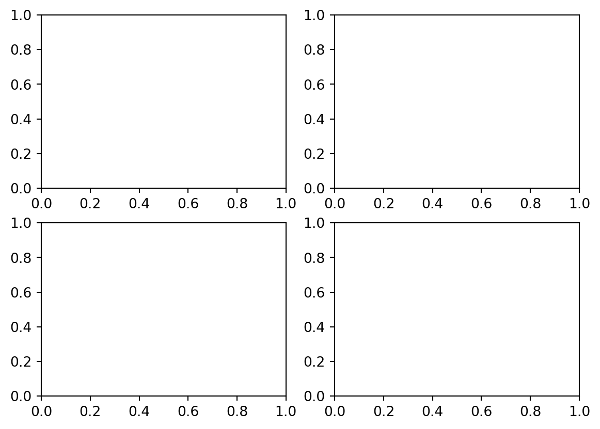
fig, axes = plt.subplot_mosaic([['left', 'right_top'],
['left', 'right_bottom']],
figsize=(7, 7))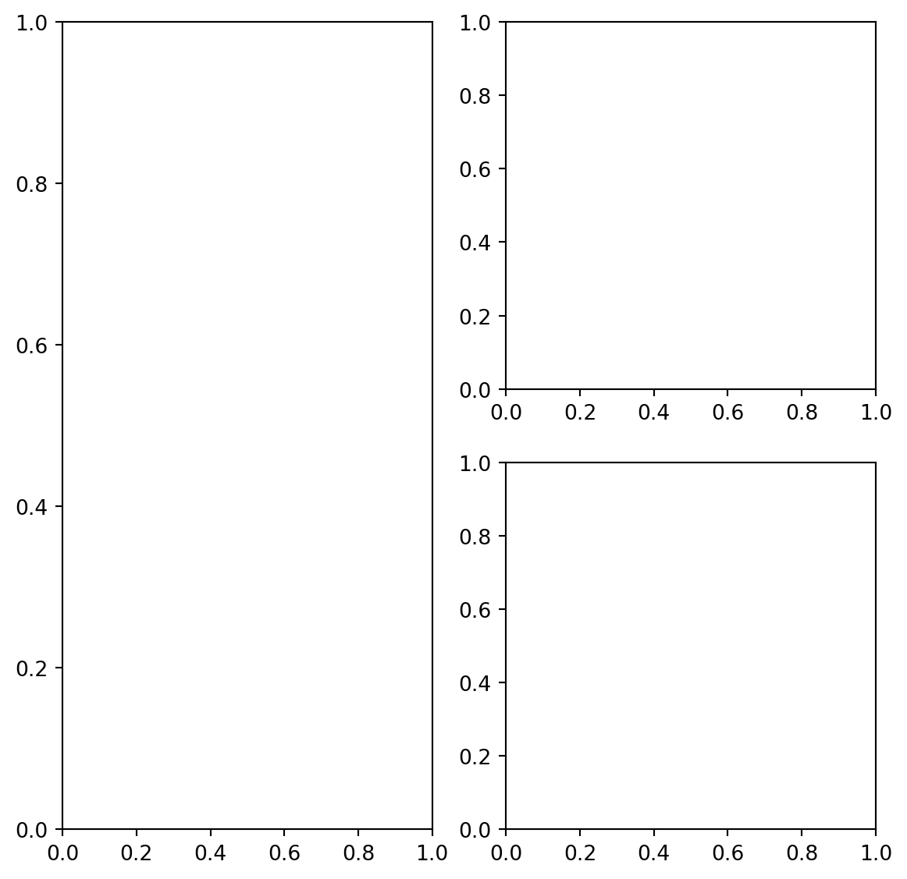
Saving
Last but not least - now we have a fabulous visualisation, it’s time to save it!
Matplotlib offers a number of file formats, including png and svg.
plt.rcParams['svg.fonttype']= 'none' # This makes our font editable in vector graphics formats e.g. Photoshop/Inkscape
fig, ax = plt.subplots(figsize=(4, 4))
sns.scatterplot(
data=proteins,
x='Molecular Weight (kDa)',
y='log(2)_expression',
hue='Donor',
palette=custom_palette,
)
plt.savefig('images/example_proteins.png')
plt.savefig('images/example_proteins.svg')
plt.show()In practice
Exercises
4.3 Figure styling
4.4 Multipanel figures